App under test: Conduit (RealWorld “Medium clone”) — Angular frontend + Nitro/Prisma/SQLite API, run locally
Bottom line: the basic journeys work — sign-up, log-in, writing, editing and deleting an article, commenting and logging out all pass an automated end-to-end test. The app is not production-ready, though: I found 13 issues (5 High, 6 Medium, 2 Low). Every one was reproduced at least twice and is backed by an automated test, a screenshot or a raw HTTP log.
| App | Conduit, the RealWorld reference app. Frontend: realworld-apps/angular-realworld-example-app @ dd99ed2 (Angular 21) — the same frontend that powers the official demo. Backend: realworld-apps/nitro-prisma-zod-realworld-example-app @ c8c6685 (Nitro, Prisma 7, SQLite) — one of the two backends the project lists as fully spec-compliant. |
|---|---|
| Why run it locally | The live-demo link in the brief is dead on the test date (demo.realworld.io → HTTP 404, api.realworld.io → HTTP 530; the project moved to realworld.show). Running locally also keeps test accounts off a shared public service and lets me reset the database so every result is repeatable. |
| Only change made | The frontend hard-codes https://api.realworld.show/api; I pointed it at http://localhost:3000/api (one line). Nothing else was modified. |
| Machine | Windows 11 · Node 24.17 · Google Chrome 154 · API on :3000, frontend on :4200. |
| Flows covered | Sign-up, log-in, create, edit, delete, comment, favourite/follow, log-out — plus the edge cases suggested in the brief: very long inputs, special characters, simulated network failure, logged-out/expired session, weak credentials. |
| How | (1) Read the source to form hypotheses → (2) exploratory testing in the browser → (3) API probes (Node script, raw HTTP evidence) → (4) Playwright reproduction test + screenshot for every UI issue → (5) axe-core 4.13 audit against WCAG 2.1 AA. Final run on a fresh database: 16/16 green. |
| Severity scale | Critical outage / data breach / data loss for many users, no workaround · High core journey broken or serious security weakness · Medium feature partly broken or confusing, workaround exists · Low minor, cosmetic or API-only. |
Ordered by severity. Evidence: A1–A12 = screenshots in Appendix A · BUG-xx = Playwright test in qa-tests/tests · Pxx = API probe in evidence/api-probes.json. File references point to the tested commits.
| # | Title / Summary | Steps to Reproduce | Expected vs Actual | Severity | Suspected Cause |
|---|---|---|---|---|---|
| 1 | Home feed never finishes loading when the API has a problemError handlingA1 · BUG-01 |
|
a clear “Couldn’t load articles” message with a Retry button (and/or automatic retry).“Loading articles…” and “Loading tags…” stay forever. No error, no retry — only a manual reload helps. | High | ArticleListComponent.runQuery() subscribes with a success handler only (article-list.component.ts:124). The API error is never caught, so the loading state is never cleared and nothing is shown. |
| 2 | Editing an article changes its web address — links shared earlier stop workingFunctionalA2–A3 · BUG-02 · P8 · fix verified (§4) |
|
URL unchanged when the title is unchanged; old links keep working.every save creates a new random URL suffix; the old URL returns 404 and shows a blank page (see #6). | High | The API regenerates the slug whenever a title field is present in an update (articles/[slug]/index.put.ts:35), and the editor always re-sends the unchanged title (editor.component.ts:80). Full analysis in §4. |
| 3 | Logging out does not end the session; tokens live 60 days and renew themselvesSecurityBUG-03 · P6 |
|
401 — token revoked at logout; short-lived tokens.200 OK, and the reply contains a fresh 60-day token. A leaked token (shared PC, logs, XSS) gives indefinite access. | High | Logout only deletes the token in the browser (user.service.ts:85); no server-side session or deny-list; expiresIn: '60d' (generate-token.ts:6); GET /user re-issues a token on every call (user/index.get.ts:21). |
| 4 | Unlimited password guessing — no rate limit or lockoutSecurityBUG-04 · P5 |
|
after ~5–10 failures: HTTP 429, delay or temporary lock (or CAPTCHA).30 wrong guesses answered 401 in 3.7 s, never throttled; the right password still works at once. With #5, weak accounts can be guessed in seconds. | High | No rate-limiting or failed-attempt tracking on users/login.post.ts, and nothing in front of the API (gateway / WAF) that adds it. |
| 5 | Sign-up accepts an invalid e-mail and a 1-character passwordValidation · SecurityA4 · BUG-05 · P1–P2 |
|
inline errors: “enter a valid e-mail”, “password must be at least 8 characters”.account created and logged in. Inconsistent: changing the password in Settings does require 8+ characters. | High | Register schema only checks “not blank” (user.schema.ts:5,7 — min(1), no .email()) while the update schema enforces min(8) (:25). The form uses only Validators.required; the e-mail input is type="text". |
| 6 | “Not found” and loading errors show a blank white pageError handling · UXA3, A5 · BUG-06 |
|
a friendly “This article doesn’t exist or was moved” message with a way back.empty page. The API did answer 404 {"errors":{"article":["not found"]}}, but the UI throws the message away. |
Medium | Data-shape mismatch: article.component.ts:73 and profile.component.ts:46 store err.errors, but ListErrorsComponent reads .errors again (list-errors.component.ts:13), finds nothing and renders an empty list. Even the fallback message has the wrong shape. |
| 7 | “Delete Article” is one click with no confirmation — and a failed delete is silentUX · Error handlingA6 · BUG-07a/b |
|
“Delete this article?” confirmation (or Undo); on failure an error message and the button re-enabled.(1) deleted instantly and permanently. (2) nothing happens — no message; the user stays on the page not knowing why. | Medium | The button calls deleteArticle() directly (article.component.html:26,73), which subscribes with a success callback only (article.component.ts:116). “Disabled” is just a CSS class. |
| 8 | E-mail treated as case-sensitive → “credentials invalid” and duplicate accountsFunctionalA7 · BUG-08 · P3 |
|
login works (addresses are case-insensitive in practice); second sign-up rejected as “already taken”.login fails with “credentials invalid”; the lower-case address opens a second, separate account. | Medium | E-mail is stored exactly as typed and matched exactly (users/login.post.ts:11; SQLite compares case-sensitively). No normalisation (trim + lower-case) at sign-up or login. |
| 9 | Usernames containing ?, / or # make the user’s profile unreachableValidationA8 · BUG-09 · P4 |
|
profile opens (or sign-up rejects unsupported characters).the app asks the API for user “qa” (404) → blank page. / and # fail too; for ? and / even correctly encoded requests fail. |
Medium | The API accepts any characters in usernames (user.schema.ts:6); the frontend builds URLs by string concatenation without encoding (profile.service.ts:19,27,33). Fix: allow e.g. [A-Za-z0-9_-] only and encode path segments. |
| 10 | No length or size limits: huge titles create unopenable articles and break the layoutValidation · PerformanceA9–A10 · BUG-10 · P11–P12 |
|
title limited (e.g. ≤ 200 chars) with a message; oversized requests rejected (413).saved (201) but can never be opened — the URL is ~30 KB and the API answers 431 → blank page. In the feed the title stretches the page ~330,000 px wide. A 10 MB article body is also accepted. | Medium | Schemas check min(1) but no .max() (article.schema.ts:5); the slug is built from the full title (articles/index.post.ts:13) and exceeds Node’s 16 KB request-header limit; no request-size limit; no CSS word-wrap for long words. |
| 11 | Accessibility: fails WCAG 2.1 AA checks on every pageAccessibilityA11 · BUG-11 (axe-core) |
|
no serious/critical WCAG 2.1 AA violations; everything usable by keyboard.82 low-contrast text instances, 17 images without alt text, 13 links without a name, no page language — on all 5 pages; the delete-comment icon can’t be reached by keyboard. Fields have placeholders but no visible labels. | Medium | Theme colours below the 4.5:1 contrast ratio; avatar <img> without alt; <html> without lang (index.html:2); a clickable <i class="ion-trash-a"> instead of a <button aria-label="Delete comment"> (article-comment.component.ts:33). |
| 12 | Invalid paging parameters crash the API (HTTP 500); page size is unlimitedAPI robustnessBUG-12 · P7, P7b |
|
400/422 “offset must be ≥ 0”; limit capped (e.g. 100).(1) 500 Server Error — the dev build even returns the internal database-query error text. (2) accepted: every article comes back in one response (performance / abuse risk as data grows). |
Low | skip: Number(query.offset) || 0 and take: Number(query.limit) || 10 with no validation or clamping (articles/index.get.ts:22–23); the ORM error is not handled. |
| 13 | Tags aren’t trimmed: “ news ” and “news” become two identical-looking tagsData qualityA12 · BUG-13 · P10 |
|
one tag “news”.two separate tags that look identical; filtering by “news” misses the article whose tag has spaces. | Low | The editor checks tag.trim() but stores the untrimmed value (editor.component.ts:63); the API accepts any string (article.schema.ts:8). |
What happens. Every time an author saves an article — even to fix a single typo in the body — the article gets a new address (in screenshots A2a → A2b, /article/Our-release-notes-fc56afda became /article/Our-release-notes-cb171958), and the old address answers 404, which the UI then shows as a blank page (#6).
Why. The API’s update handler creates a brand-new slug with a random 8-character suffix whenever the request contains a title field (articles/[slug]/index.put.ts:35) — it never checks whether the title actually changed. The Angular editor always submits the whole form — title, description, body and tags (editor.component.ts:80) — so a title is present on every save and a new slug is minted every time. The RealWorld documentation only says the slug is updated “when the title is changed”, and the project’s own API test updates the body without sending a title, which is why the automated suite never caught it: the bug only appears when this frontend is combined with this backend. Nothing keeps the previous slug, so every link shared on social media, in e-mails or indexed by search engines silently dies after each edit — a high-frequency problem, since editing is routine.
How I would fix it. (1) In the API, only mint a new slug when the new title differs from the stored one — a 3-line change that I applied locally and verified (below). (2) Longer term, keep a slug-history table and answer old slugs with a 301 redirect, so even real title changes never break links. (3) Have the editor send only the fields that changed. (4) Turn my Playwright reproduction (BUG-02) into a regression test in CI — against the patched API it now fails exactly at “the URL changed although the title did not”, which proves the fix.
// server/routes/api/articles/[slug]/index.put.ts (full diff: evidence/fix-bug02-stable-slug.diff) select: { + title: true, author: { select: { id: true, username: true } }, - const newSlug = article.title ? `${slugify(article.title)}-${crypto.randomUUID().slice(0, 8)}` : null; + // Only mint a new slug when the title really changes (docs: "the slug also gets updated when the title is changed"). + const titleChanged = article.title !== undefined && article.title !== existingArticle.title; + const newSlug = titleChanged ? `${slugify(article.title!)}-${crypto.randomUUID().slice(0, 8)}` : null;
<script>, onerror= and javascript: links in an article body do not execute (Angular sanitizer).api.interceptor.ts), so switching environments needs a code change instead of configuration.demo.realworld.io returns 404; the project now lives at demo.realworld.show.powershell -ExecutionPolicy Bypass -File setup\setup-realworld.ps1 # once: pinned commits, install, create DB powershell -ExecutionPolicy Bypass -File setup\start-realworld.ps1 -ResetDb # fresh, empty app on :4200 / :3000 cd task1-qa-report\qa-tests ; npm install ; node api-probes.mjs ; npx playwright test # evidence + 16 tests
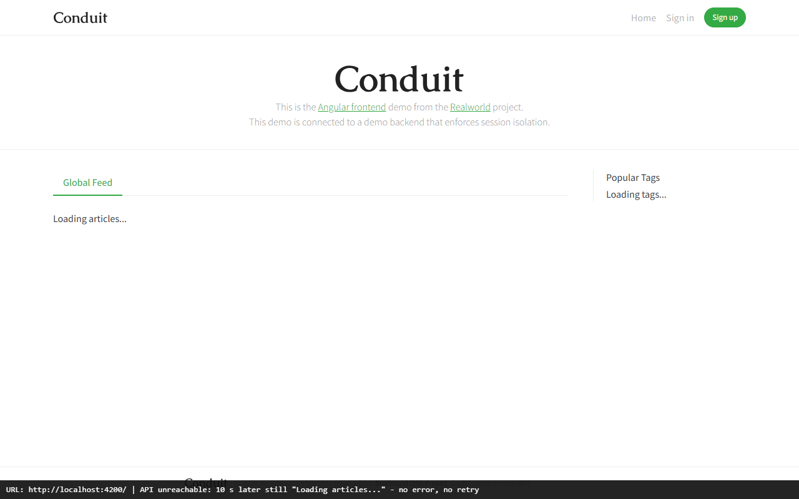
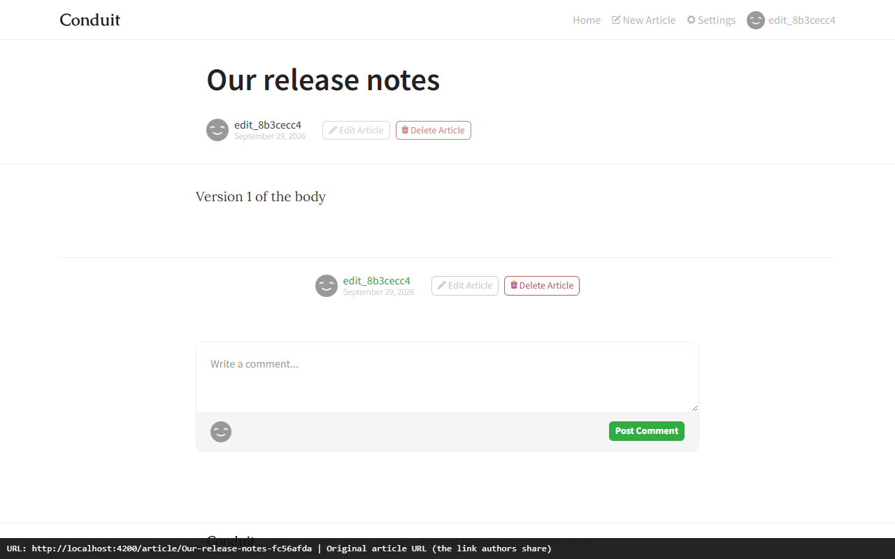
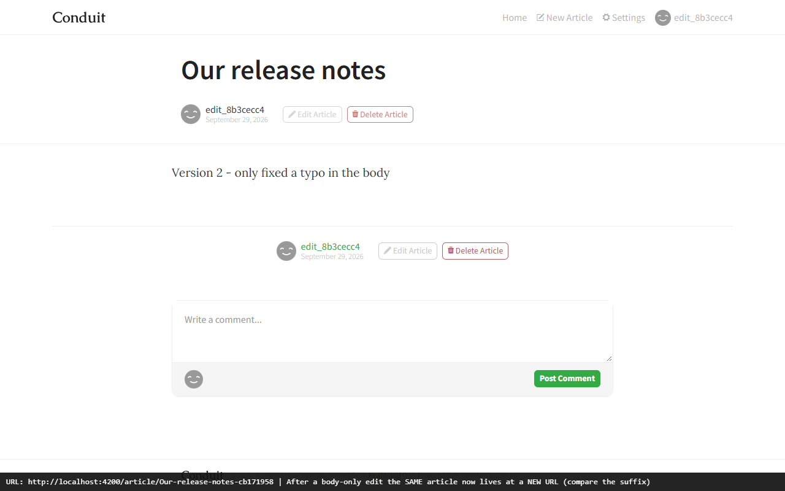
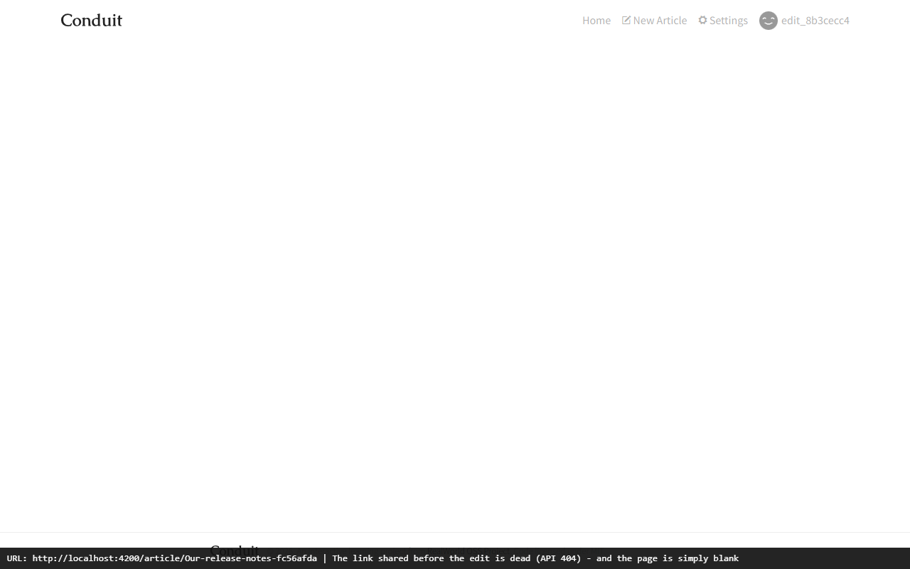
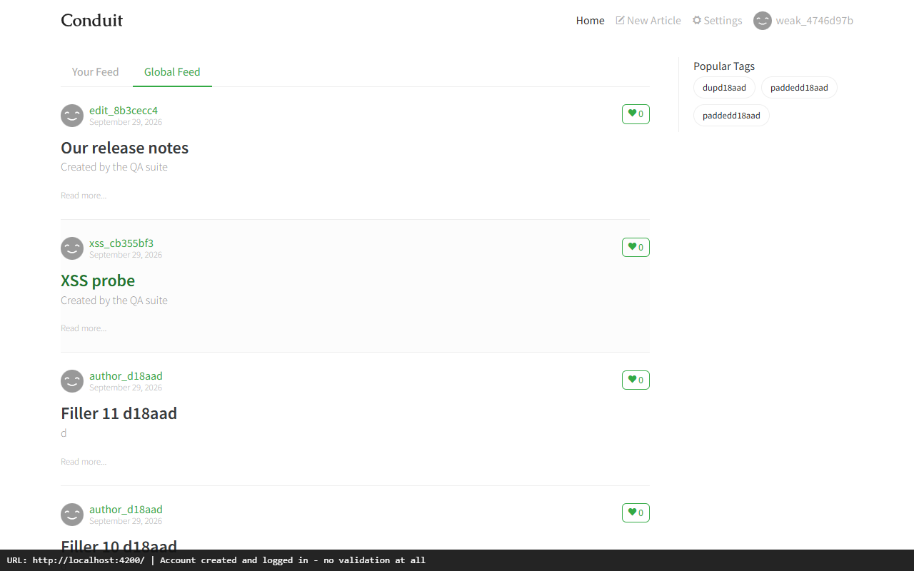
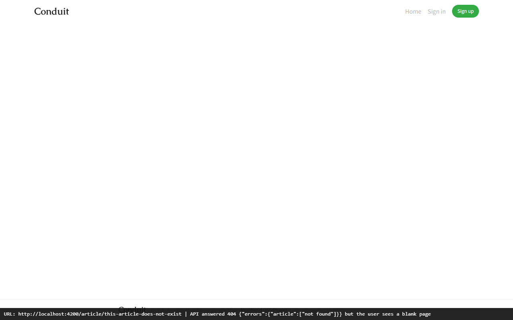
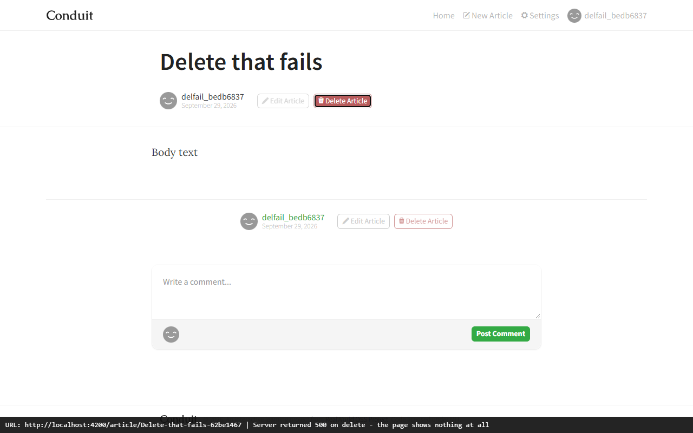
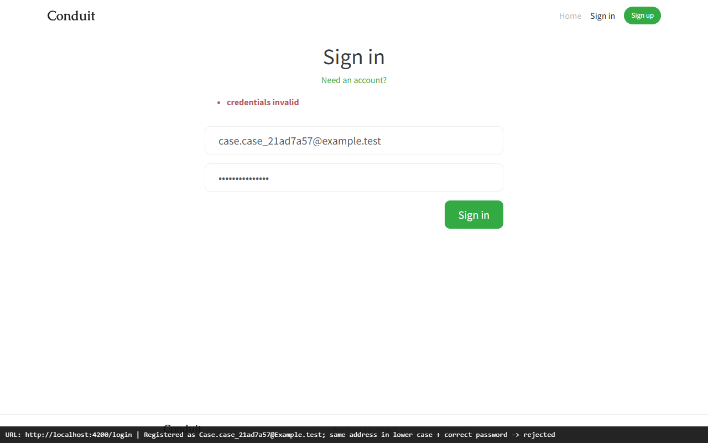
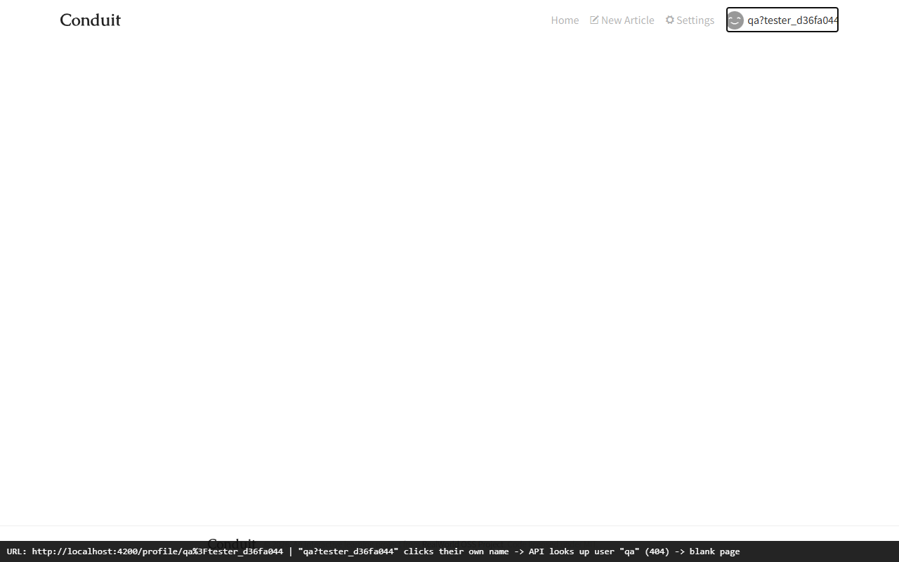
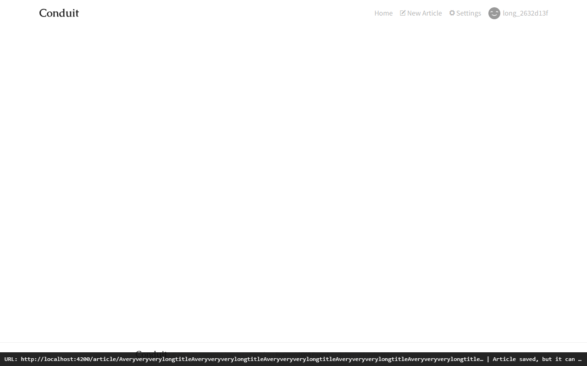
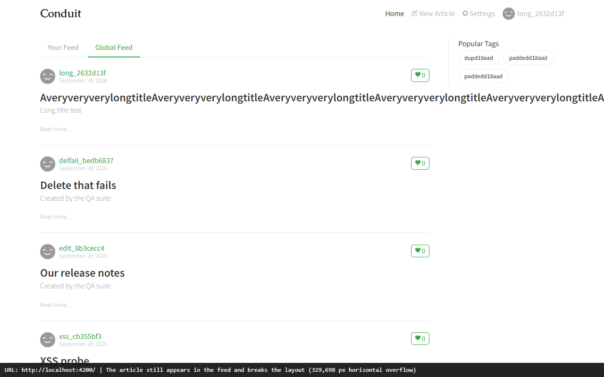
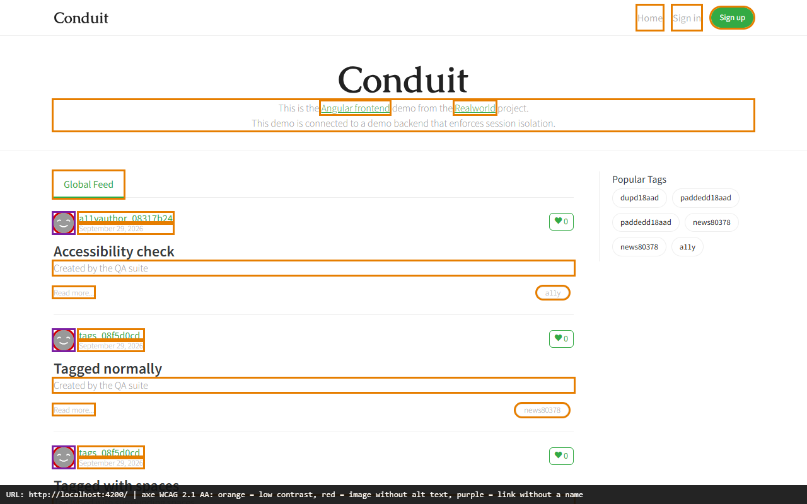
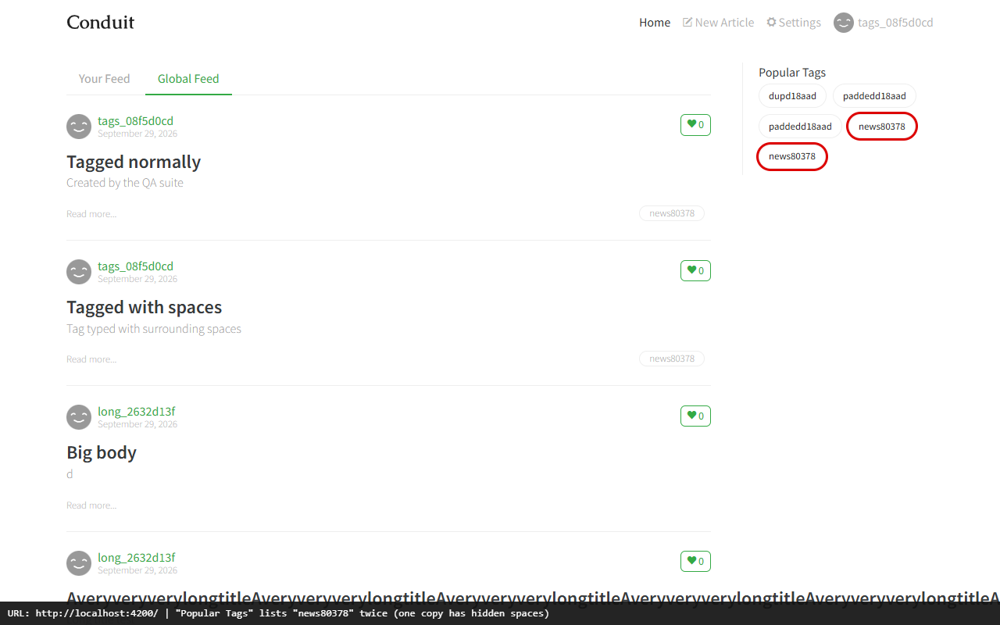
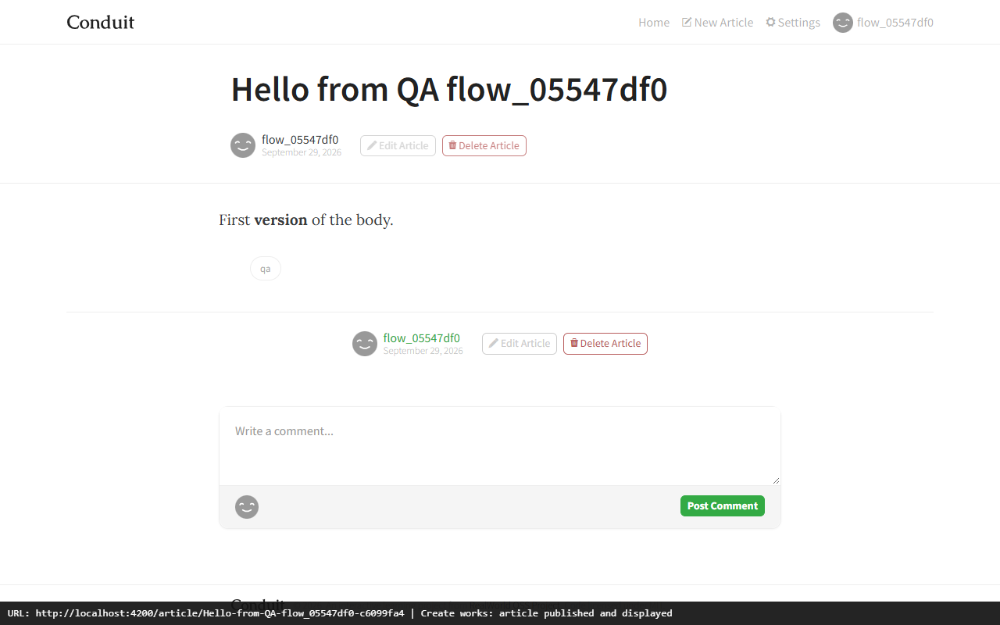